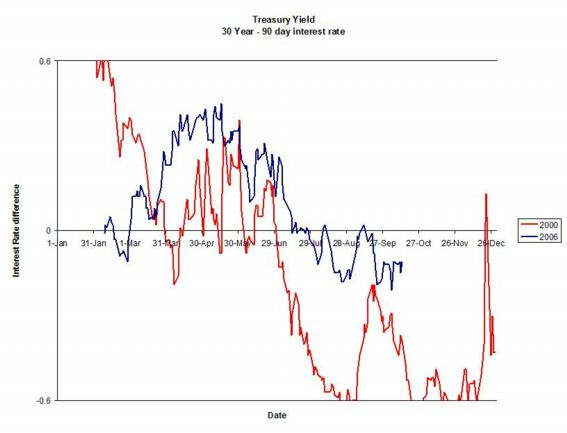

[Previous entry: "Another law ignored"] [Main Index] [Next entry: "Hardyville: The Coup, Part II"]
10/14/2006 Archived Entry: "The Recession will start after the election"
THE RECESSION WILL START AFTER THE ELECTION but it will start, most probably within the next 5-10 months. My August 28th posting explained the significance of the inverted yield curve in predicting recessions. When short-term bonds pay more than long-term bonds, and the pattern persists for over a month, a recession always follows.
Now the yield curve has been inverted for 2 months.

While the stock market is claiming new highs, in inflation-adjusted terms it remains well below the 2000 peak. Kara Homes of New Jersey declared bankruptcy. Wall Street is busy sending packaged portfolios of mortages back to the banks, as forclosures have jumped over 50% in a year, and an appalling 24% from July to August of this year alone. Depending on what figures you believe, banks have 40-85% of their assets in real estate. The hedge fund Amaranth lost $5-6 billion in a matter of weeks, but that may look like a "soft landing" if enough banks fail as the housing bubble implodes.
If a crash comes, it may come very rapidly. Got gold?
Posted by Silver @ 11:57 AM CST
Link